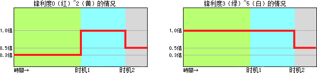

| 攻击动作 | 威力 | 备注 | |
|---|---|---|---|
| 大剑 | 纵斩 | 48 | 持剑状态下的纵斩 |
| 横扫 | 36 | ||
| 上斩 | 46 | ||
| 拔刀攻击 | 48 | 移动中的纵斩 | |
| 片手剑 | 前斩 | 14 | |
| 横斩 | 12 | 前斩的连携攻击 | |
| 剑盾连击 | 8・12 | 横斩的连携攻击 | |
| 回旋斩 | 24 | ||
| 跳斩 | 18 | ||
| 上斩 | 15 | 跳斩与翻滚后的连携攻击 | |
| 防御攻击 | 14 | 防御中的攻击 | |
| 拔刀攻击 | 18 | 移动中的纵斩（跳斩） | |
| 双剑 （通常状态） |
下斩 | 14 | |
| 斜向斩1 | 8・6 | 下斩的连携攻击 | |
| 斜向斩2 | 5・7・16 | 斜向斩1的连携攻击 | |
| 右回旋斩 | 10・8・6 | ||
| 左回旋斩 | 10・8・6 | ||
| 切裂斩 | 12・6 | ||
| 上斩 | 15 | 切裂斩与翻滚后的连携攻击 | |
| 拔刀攻击 | 12・6 | 移動中的下斩（切裂斩） | |
| 双剑 （鬼人化） |
下斩 | 18 | |
| 斜向斩1 | 10・8 | 下斩的连携攻击 | |
| 斜向斩2 | 6・9・21 | 斜向斩1的连携攻击 | |
| 右2回旋斩 | 13・10・8・13・10・8 | ||
| 左2回旋斩 | 13・10・8・13・10・8 | ||
| 上斩 | 20 | 翻滚后的连携攻击 | |
| 乱舞斩 | 28・5・5・5・5・5・5・5・5・33 | ||
| 大锤 | 纵敲1 | 52 | |
| 纵敲2 | 20 | 纵敲1的连携攻击 | |
| 上敲 | 100 | 纵敲2与旋转攻击的连携攻击 | |
| 横敲 | 15 | ||
| 旋转攻击 | 20・10・10・10・10・10・40 | （途中根据旋转数不同可派生出 蓄力（中）和上敲攻击） |
|
| 蓄力（小）攻击 | 45 | 蓄力时间（小）的攻击 | |
| 蓄力（中）攻击 | 45・35 | 蓄力时间（中）的攻击 | |
| 蓄力（大）攻击 | 20・76 | 蓄力时间（大）的攻击 | |
| 拔刀攻击 | 20 | ||
| 长枪 | 中段突刺 | 23・23・30 | 最多连续３回 |
| 上段突刺 | 28・28・30 | 最多连续３回 | |
| 突进 | 20 | ||
| 终结突刺 | 40 | 突进后的终结突刺 | |
| 防御攻击 | 20 | 防御中的攻击 | |
| 拔刀攻击 | 28 | ||
